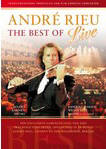

|
The Best Of Andre Rieu Live (2007) -
81 Minutes
|
 |
| Violinist André Rieu has
become the new King of the waltz. His hugely
popular concerts are sold out all the time. And
still people want to hear more of this musician
who attracts audiences with both his charm and
his music alike. He even popularized
Shostakovich… "Second Waltz".
This DVD allows the viewer to
join the crowd at Rieu's concerts in Berlin (Der
Waldbühne) and London (The Royal Albert Hall).
This is an infectious show of classics and more:
with "Wiener Blut", the "Radetzsky March" and An
der Schönen Blauen Donau". But also with "Hava
Nagila" and "Amazing Grace". |
Where to buy?
|
|
DVD Tracklist
- Dein ist Mein Ganzes Herz
- Wiener Blut
- Hava Nagila
- Tea for Two
- Lara's Theme
- Poliushko Polie
- Kalinka
- Funiculi Funicula
- La vie est Belle
- Salomé-Sabredance
- An der Schönen Blauen Donau
- Radetzky Marsch
- Boléro
- The Second Waltz
- Sirtaki (Zorba's Dance)
- Amazing Grace
- Auld Lang Syne
|
|